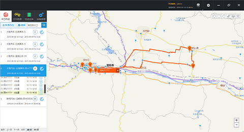
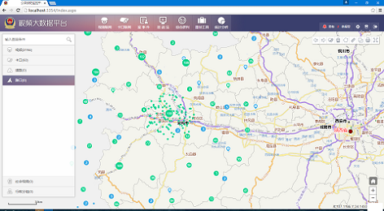
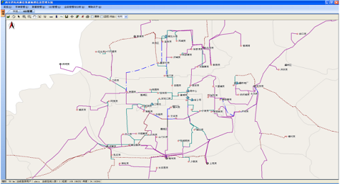

实现了对地图的操作，路径分析，使用Arcgis js开发webgis,并在桌面程序中对程序web页面进行调用并交互。

基于Arcgis js api的大数据分析平台，全面讲视频设备接入地图，在地图中可以调用相应的视频设备，并展示，回放，直播视频画面。

此项目开发较早，使用.net2.0和Mapxtreme,实现了对通信资源中的站点，设备，线路全面管理，并提供故障定位，智能线路分析功能！
{{ post.description }}
创作时间：{{ post.date | date: '%B %-d, %Y - %H:%M' }} 最后更新：{{ post.updatedate | date: '%B %-d, %Y - %H:%M' }}